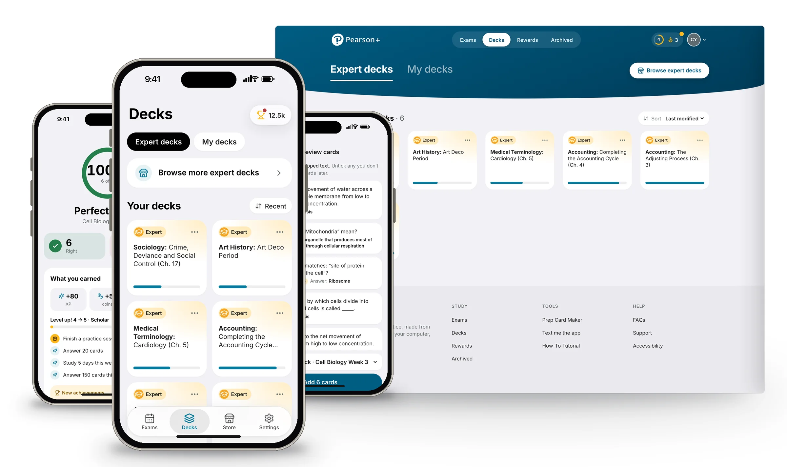
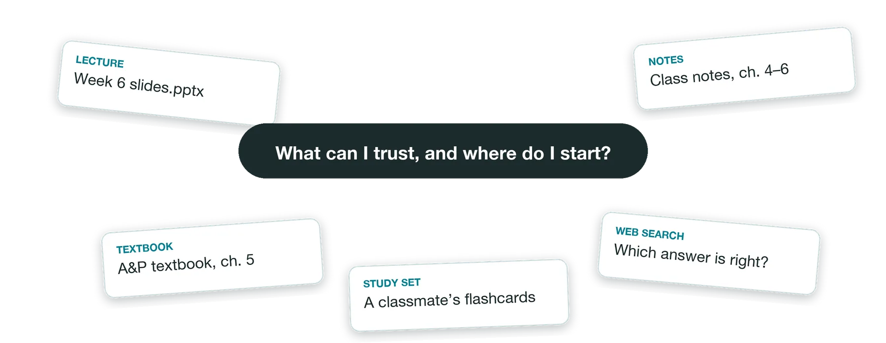
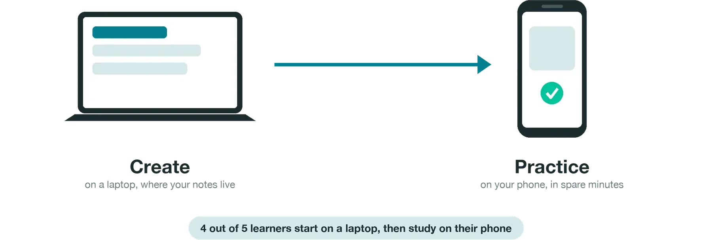
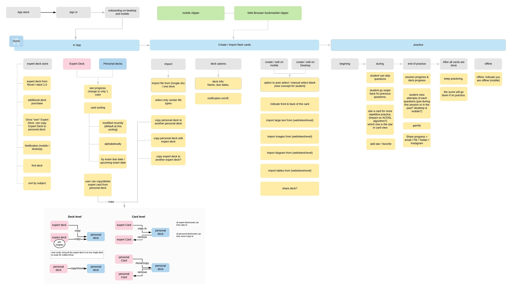
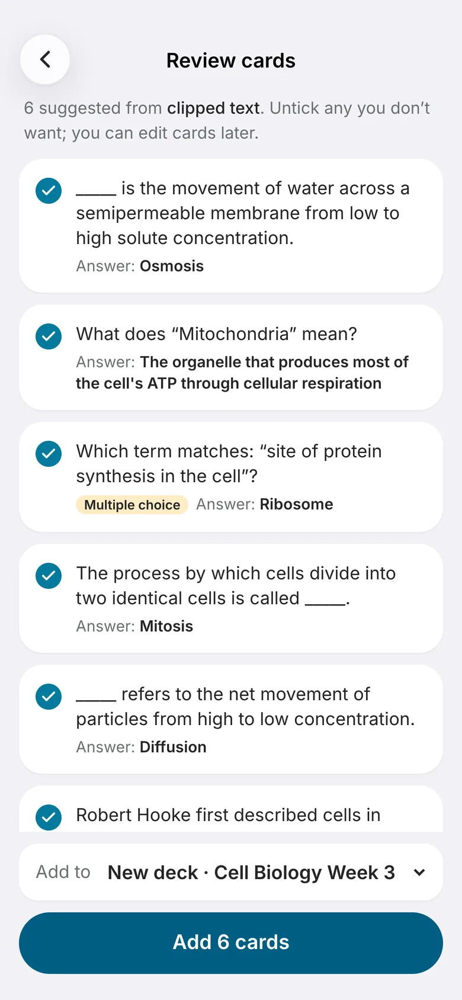
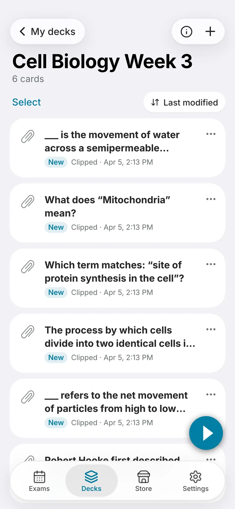
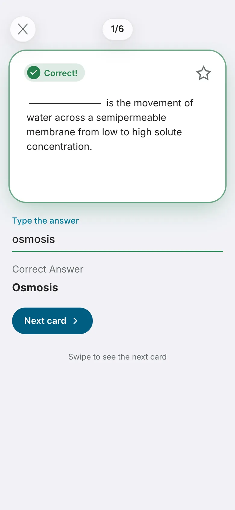
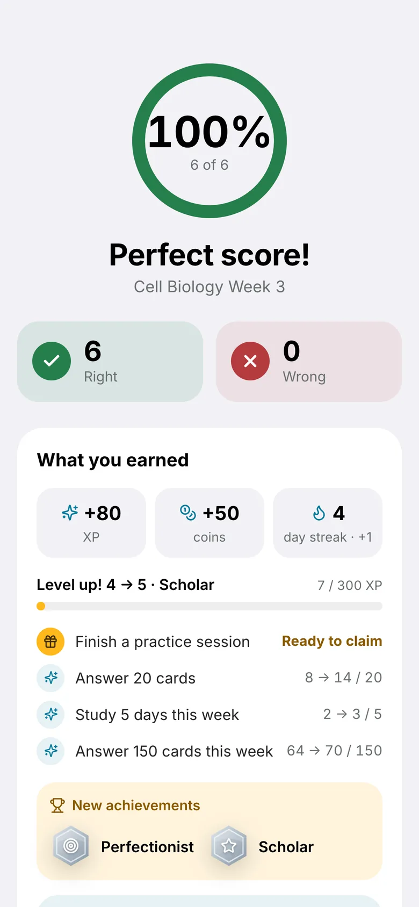
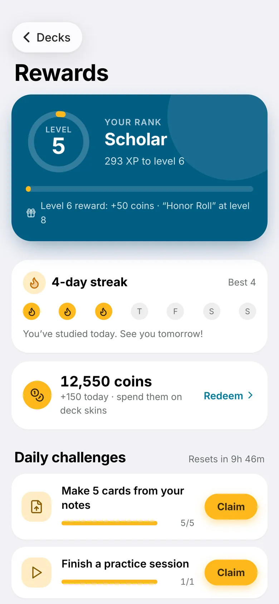
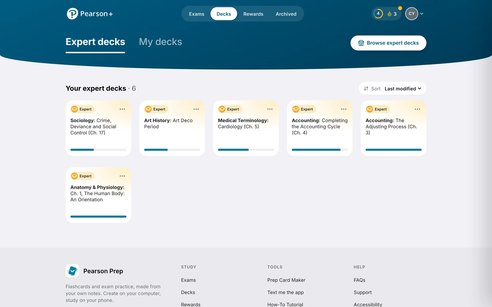

Pearson Prep
Helping learners figure out where to start, and when they’re ready. Four years leading design on a study app that turned a learner’s own notes into flashcards, from a fake-door test to roughly 57,000 users.
Try the modernized app
This is the working rebuild, not a mockup. Tap around:
- Open a deck and press Practice. Answers move on when you’re right, and you get results at the end.
- Tap the trophy to see Rewards and claim a challenge.
- Try Make cards from notes → Paste text, under Decks › My decks.
Uses sample data, saved only in your browser. On your phone, open the full-screen link for the real feel.

Learners had plenty to study, but nothing they could trust
In 2016, Pearson made the textbooks, but when learners sat down to study they weren’t really using Pearson. They re-read notes, flipped through lecture slides and, mostly, Googled. They’d find five answers on five websites with no way to tell which was right, and they were short on time between classes, jobs and families.
Our team partnered with Pearson’s data science lab with a simple question: could we take a learner’s own material, add content they could actually trust, and turn it into a better way to study?

Busy higher-ed learners, mostly in courses like Anatomy & Physiology, Sociology and Accounting.
Learning Apps owned the app; ACDSL, Pearson’s data science lab, built the engine that turned notes into cards; Study Tools wanted the same flashcards inside Revel & eText.
Four things I was up against
Show learners actually wanted this before Pearson put real money behind it.
The adaptive features were genuinely hard to explain, and they had to feel effortless.
It had to make sense as a business, not just as a good study tool.
The same flashcards needed to live as their own app and inside two other products at once.
Research kept us honest. Over 13 rounds, learners told us they wanted this, but a few things kept tripping them up:
Putting each job where it belongs
The original idea was a website. But when I mapped what people actually do, making cards happens on a laptop, where notes and slides already live, and studying happens on the phone, in the five minutes between classes. Our lab test backed it up: four out of five learners said they’d start on a laptop and study on their phone. So we flipped it, and the website became a mobile-first app.

Testing before building
We started cheap, with a fake-door landing page, and 58 learners signed up in three weeks. I then designed a working prototype that was running in about ten weeks, and we kept putting it in front of real learners: a survey of 159 people, a two-week live beta and a lab study in Boston.
Letting learners lead the design
So I took the red out and hid progress while they practiced.
So I rebuilt card creation as front and back, like the flashcards they already knew.
So we added Expert Decks, which became our most-used feature.
Your notes become flashcards, practiced in minutes
Drop in your own notes or slides and Pearson Prep turns them into flashcards. Add Pearson Expert Decks when you want content you can trust. Then practice in short sessions on your phone, and see right away what you got right and what to review.
Launch wasn’t the finish line
We saw people browsing more than practicing, so I designed lighter, more playful pieces, like coins, a matching game and deck skins, to pull them into practice. The data still said learners didn’t know if they were ready, so I led the design of Exam Home, which put the exam date front and center and planned practice around it. That brought us right back to the question we started with.

The app’s site map across Exams, Expert Decks, My Decks, the store and settings. Click to view full size.
From 58 sign-ups to ~57,000 learners
From a fake-door test to a working prototype in learners’ hands.
of surveyed learners said it would make them feel more confident; every lab tester said they’d switch.
by February 2020, on iOS, Android and the web.
added by learners in the first five months of 2019.
“If I did it again, I’d test pricing before building the store.” We proved learners wanted Expert Decks, but not that they’d pay, and 43% told us they wouldn’t.
The same app, rebuilt for today
In 2026 I returned to Pearson Prep and rebuilt it as a working app, keeping the flows learners helped design and modernizing everything around them: large titles, a floating glass tab bar, rounded cards with no divider lines, and light, soft and dark themes. Drag the slider to compare.
 2019 · As shipped2026 · Rebuilt
2019 · As shipped2026 · Rebuilt
Modernized and extended with Claude
The 2016–2020 work lived in Figma files and research decks. In about two weeks, working with Claude (Anthropic’s AI) as my build partner, I turned it into a working app on mobile and desktop that real learners can open on their own phones. I set the direction and made every design call; Claude read the Figma designs and our design-journey doc, wrote the code, tested each change in a browser and shipped it.





- Clip notes from anywhere and get suggested cards to review
- A new deck, ready to practice
- Forgiving answers that move on when you’re right
- A results page with what you earned
- Rewards: levels, streaks, challenges, achievements
What Claude helped add beyond the original
Upload .docx, .pdf or .txt files, or clip text from other apps (the Android share menu, an iPhone Shortcut or a desktop bookmarklet). Cards are suggested on the device and the learner keeps the ones they want.
XP and levels, a daily study streak, daily and weekly challenges to claim, and 14 achievements, aimed at the “browsing, not practicing” problem we found after launch.
Answers that ignore capitals and accents, cards that move on when you’re right, and an end-of-deck results page showing what you got right, what to review, and what you earned.
Light, soft and dark themes, abstract subject-themed deck skins, zoom transitions, and a desktop version for making cards on a laptop, the same split our 2017 lab study pointed to.

The rebuilt desktop app. Create on a laptop, practice on the phone. Click to view full size.
Interested in working together?
I’m open to senior product design roles where research, systems thinking and AI-accelerated prototyping come together.